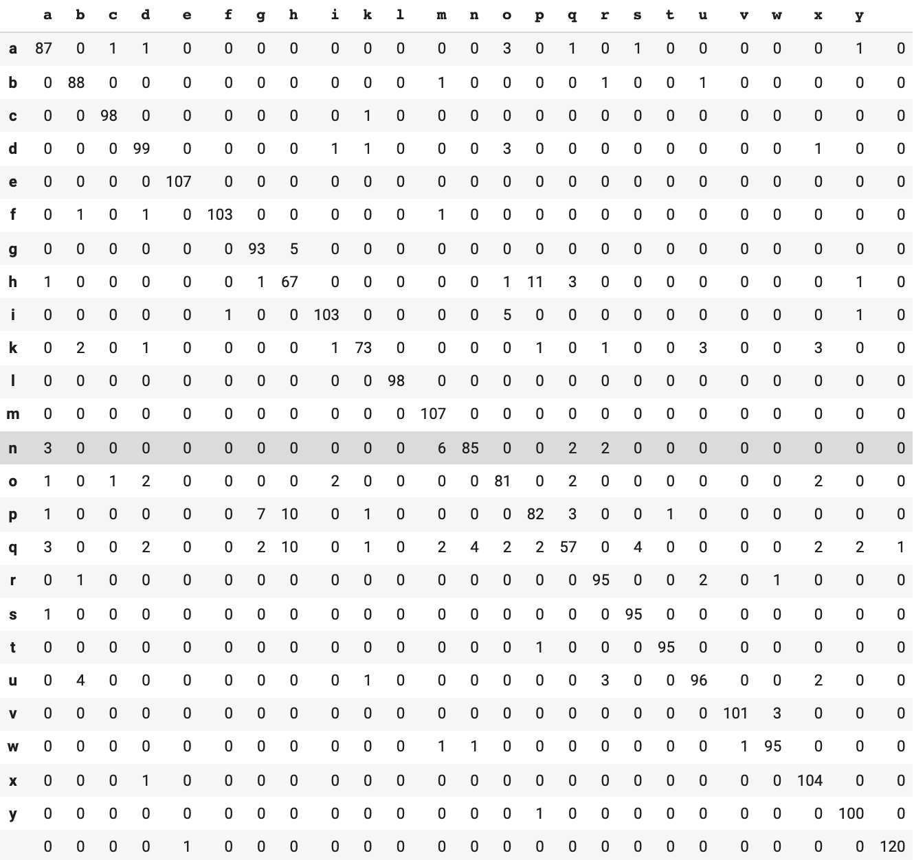
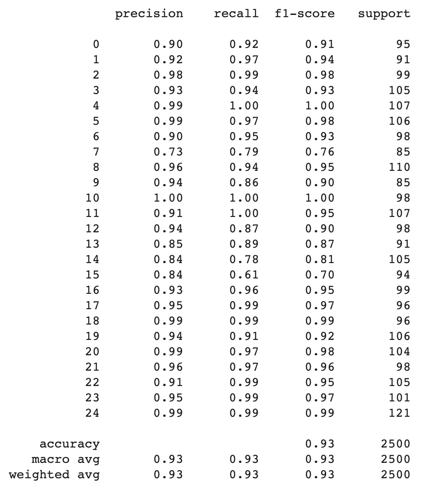

This project aims to classify alphabet hand gesture using a custom wrapper of MediaPipe, which is a Google's library used for creating real time computer vision projects.

This project aims to classify alphabet hand gesture using a custom wrapper of MediaPipe, which is a Google's library used for creating real time computer vision projects.
We strongly belive that the modern technologies have the opportunity to enhace the every day live of unfortunate people. The main purpose of this project is to develop a software module capable of distinguish between different hand signs and make possible to realize speech synthesizer application.
The first problem to solve was the detection of the hands: we choice MediaPipe to do that because it provides a module that utilizes an ML pipeline consisting of multiple models working together: A palm detection model that operates on the full image and returns an oriented hand bounding box. A hand landmark model that operates on the cropped image region defined by the palm detector and returns high-fidelity 3D hand keypoints. Providing the accurately cropped hand image to the hand landmark model drastically reduces the need for data augmentation and instead allows the network to dedicate most of its capacity towards coordinate prediction accuracy. So we have created the wrapper HandTrackingModule.py which is capable of processing the landmarks obtained from the MediaPipe Hand Module and returning data in a suitable form.
Secondly, we had to create the dataset with the alphabet gestures (we referenced this video). Since there are two dynamic gestures for Z and J we didn't include these letters in the dataset. Indeed, we are capable of processing a single frame, not a sequence. We have 24 possible diffetent labels + 1 because we consider an open hand gesture as a space for dividing words. We build the script dataset_constructor.py which can be used to build the example for every label.
Finally, we created a model that can classifify the gesture relying on the data outputed by the HandTrackingModule. As possible application we have developped a simple app gesture_detector.py that displays the letters according to the gesture and pronounce them with a speech synthesizer
The wrapper we built has two main functions:
The first thing to do is to create an HandTrakingModule object passing in input the following arguments:
After the creation of the object, we can call the method draw_hands_on_image to draw the landmark of the hands linked by green lines, passing the image as an argument. The method will return the img with landmarks drawn.

The second main method we buildt is find_position which takes in input the img and the hand to detect: to choose the hand to detect we can use two constants defined in the wrapper:
The method returns the landmark-list with 21 elements: every element of the list has 7 elements:

The first task to do was to create the dataset with the alphabet gestures. We referenced this video:
Since there are two dynamic features for Z and J we used the other letters for the algorithm. So we have 24 possible labels + 1 because we consider an open hand as a space. We build the script dataset_constructor.py which can be used to build the example for every label. In this script there are some parameters that can be set:
The model is based on a Logistic Regression between the 32 features. Firstly, we have mounted the drive with the whole dataset and then imported the data, then we randomly split the data in training set and test set respectively 80% and 20% of the whole dataset. After that we have used a grid search in order to tune the algorithm with different values of iteration, regularization factor and solvers. During the cross validation is used the repeated stratified k-fold algorithm which in this case divide the data in 10 folds and is repeated for 3 times. The notebook displays the paramethers' values which got the best scores during the training and the cross validation. In this way, if the colab runtime is disconnected due to inactivity, we can retrain the model in just few seconds instead of waiting several minutes for the tuning to be done. In the end that there is a section dedicated to the valutation of the model's performance on the test set. The test result includes a confusion matrix and a classification report with precision, recall and f-measure for each class and it can be read in the colab preview below. Finally, there is a cell that serialize the model in .sav file so that it can be used in an application.
For the notebook used for training the model:
Google Colab
For whole project: GitHub
The csv for each letter can be found at this link.
An example of how the csv looks like is shown in the following image representing the first 20 entries of the 'a' dataset.

Every csv is divided in 32 column for the features and 1 column for the label using the following conventions:


Below is shown an example of application's use with the sentence 'my name is Simone'
The resulting model (tuned with grid search) has these parameters:
In general, the model developed has great performances with almost every class. In all
these cases, it reached f-mesure score above 0.90. Some problems have arisen in the
classification of the letters H, P and Q (classes number 7, 14, 15), here the f-measure
score are respectively 0.76, 0.81, 0.87. Sadly, the problem is mainly due to the
MediaPipe Hand Module which is not capable of correctly detecting the hand doing the
gestures of these letters. Unfortunately, for this reason we aren't able to enhace the
performace for these classes.
Below are shown the all values of confusion matrix and precision, recall and f-measure
for every classes.

